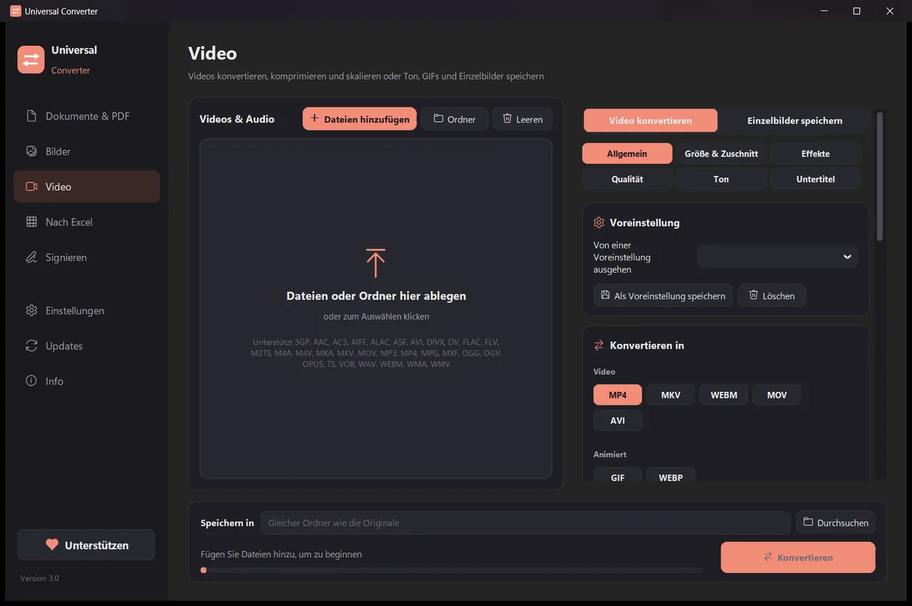

Video komprimieren, ohne es hochzuladen
Handyvideos und Bildschirmaufnahmen sind oft viel größer als nötig. Universal Converter kodiert sie mit modernen Codecs wie H.265 und AV1 neu, damit sie viel weniger Platz brauchen und trotzdem gut aussehen.
Kostenlos · Windows 10 und 11, 64 Bit · Virenscan-BerichtWindows blockiert den Download oder die App? Holen Sie sie aus dem Microsoft Store: dieselbe kostenlose App, der Windows vertraut.
Für Mac herunterladen Apple Silicon, macOS 12 oder neuer
Installieren und aktualisieren
- Öffnen Sie die heruntergeladene .dmg-Datei und ziehen Sie Universal Converter in „Programme“.
- Öffnen Sie die App. Beim ersten Mal blockiert macOS sie, weil sie nicht von Apple signiert ist: Klicken Sie auf „Fertig“.
- Öffnen Sie Systemeinstellungen > Datenschutz & Sicherheit, scrollen Sie nach unten, klicken Sie auf „Dennoch öffnen“ und geben Sie Ihr Passwort ein. Das ist nur einmal nötig.
Updates: Wenn Sie es beim ersten Start erlauben, sucht die App bei jedem Start nach neuen Versionen, prüft ihre digitale Signatur und installiert sie, wann Sie möchten.
Für Android herunterladen Android 10 oder neuer
Installieren und aktualisieren
- Tippen Sie auf dem Handy auf „Für Android herunterladen“.
- Öffnen Sie die heruntergeladene Datei. Wenn Android fragt, erlauben Sie Ihrem Browser oder Dateimanager, Apps zu installieren.
- Tippen Sie auf „Installieren“.
Updates: Die App prüft etwa einmal am Tag und meldet sich, wenn eine neue Version bereitsteht. Laden Sie sie genauso herunter und installieren Sie sie über die alte; Ihre Einstellungen bleiben erhalten.
So geht's
- Öffnen Sie Universal Converter und wählen Sie links Video.
- Ziehen Sie Ihre Dateien oder einen ganzen Ordner in das Fenster, oder klicken Sie auf Dateien hinzufügen.
- Wählen Sie MP4 und senken Sie die Qualität, bis die Größe passt. Fertige Vorlagen für Handys, das Web und die Archivierung helfen.
- Klicken Sie auf Konvertieren. Die neuen Dateien werden neben den Originalen gespeichert oder im gewählten Ordner.

Warum offline?
Universal Converter arbeitet auf Ihrem eigenen Gerät. Ihre Dateien bleiben privat, große Dateien sind kein Problem, und es funktioniert ohne Internetverbindung.
Was es noch kann
- PDF in Word umwandeln
- Word-Dokumente in PDF umwandeln
- Mehrere Dateien zu einem PDF zusammenfügen
- Ein PDF auf eine gewählte Größe komprimieren
- PDF-Seiten in JPG-Bilder umwandeln
- Gescanntes Dokument in eine bearbeitbare Word-Datei umwandeln
- Bilder zwischen JPG, PNG, WEBP und mehr umwandeln
- Bildgröße ändern oder auf eine Dateigröße verkleinern
- Fotos zu einem PDF zusammenfügen
- Text aus einem Bild kopieren (OCR)
- Videos zwischen MP4, MKV, WebM, MOV und AVI umwandeln
- Den Ton eines Videos als MP3 speichern
- GIF aus einem Video erstellen
- Tabellen aus einem PDF nach Excel holen
- Kontoauszug von PDF in Excel umwandeln
- Tabellen aus PDF-Rechnungen nach Excel übertragen
- Ein PDF unterschreiben
- Ein PDF-Formular ausfüllen